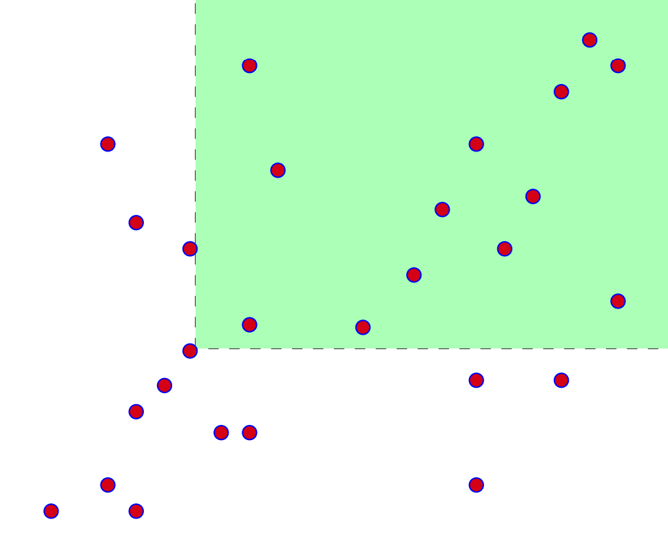

The Amazons’ Primes
Solution Writeup
Contest: TAMa 2023
Problem Idea: Kevin Atienza
Testing: Vincent dela Cruz, JL Allas
Statement: Cisco Ortega
Test Data Preparation: Kevin Atienza
Solution Writeup: Kevin Atienza
Subtask 1
Brute force?
The input in the first subtask is small enough that brute force may be feasible.
One straightforward idea for a brute force solution would be to enumerate all possible sequences of numbers from \(\{2, 3, \ldots, b-1\}\), and for each one, compute the corresponding Mini-sequences and Maxi-sequences and check whether the conditions \(m_1 < m_2 < \ldots < m_n\) and \(M_1 < M_2 < \ldots < M_n\) are satisfied.
Now, to compute the \(m_i\) and \(M_i\), we need to factorize the numbers. Since the numbers are only up to \(47\), we can simply do this by brute force as well (and save the results).
Here’s one possible way to implement it: Code (Python)
mod = 998_244_353
def is_prime(n):
return n >= 2 and all(n % d != 0 for d in range(2, n))
def sequences(vs, n, curr=()):
if n == 0:
yield curr
else:
for v in vs:
yield from sequences(vs, n - 1, (*curr, v))
def solve(n, b):
# compute primes
primes = [p for p in range(b) if is_prime(p)]
# compute smallest and largest prime factors
smallpf = [None]*b
largepf = [None]*b
for v in range(2, b):
# find prime factors
pfacs = [p for p in primes if v % p == 0]
# save the smallest and largest
smallpf[v] = min(pfacs)
largepf[v] = max(pfacs)
ans = 0
for a in sequences(range(2, b), n):
# compute Mini- and Maxi-sequences
m = [smallpf[v] for v in a]
M = [largepf[v] for v in a]
# check if both are strictly increasing
if (all(m1 < m2 for m1, m2 in zip(m, m[1:])) and
all(M1 < M2 for M1, M2 in zip(M, M[1:]))):
ans += 1
return ans % mod Here, we used backtracking to enumerate all sequences of numbers of length \(n\) between \(2\) and \(b-1\). You can also just use itertools.product to enumerate them more simply—it’s just product(range(2, b), repeat=n):
from itertools import product
...
def solve(n, b):
...
for a in product(range(2, b), repeat=n):
...We can check that this is correct by running it on one of the examples, say \(n = 3\) and \(b = 18\).
Unfortunately, when you try to pass in the actual input \(n = 10\) and \(b = 48\), you’ll find that it doesn’t seem to finish. Indeed, there are \(46\) possible values, which means there are \(46^{10} \approx 4\cdot 10^{16}\) possible sequences. Even if we could process \(10^9\) sequences per second, this program will take more than one year to finish!
We can improve this slightly with some observations.
First, the numbers must be distinct, so we could just enumerate all sequences without repeated values. This reduces the number of candidates from \(46^{10}\) to \(46\cdot 45\cdot 44 \cdots 37\). However, this number is still large—it’s \(\approx 1.5\cdot 10^{16}\), which isn’t a huge improvement. With \(10^9\) sequences per second, our program would still take several months.
Another insight would be to notice that for every set of \(n\) distinct numbers, there is at most one ordering of them that could potentially work, because we want their largest (or smallest) prime factors to be increasing as well. So for every set of \(n\) distinct numbers, we can simply sort them by their largest prime factor, and check if that ordering works. This reduces the number of candidates further to \(\binom{46}{10} \approx 4\cdot 10^9\), which is much smaller than before, and the program may now be waitable.
However, we can do even better than this. We could attempt to build the sequence number by number, and stop the construction as soon as one of the conditions already fails.
Specifically, the goal is to construct the sequence \([a_1, a_2, \ldots, a_n]\) number by number. At every point in the construction, we’re attempting to choose the value of some \(a_i\) between \(2\) and \(b-1\). We could just try each of them in turn, but we could do better: We know that \(a_i\)’s smallest and largest prime factors must be larger than those of \(a_{i-1}\)’s, so it’s enough to only try the values with that property.
After successfully choosing \(n\) such numbers this way, we’re guaranteed that the sequence we produced is valid (since we already checked all the necessary conditions), so the running time of this solution is now basically proportional to the number of sequences itself!1 So we simply hope that there aren’t too many of them that the program will finish quickly. And sure enough, if you implement and run this with \(n = 10\) and \(b = 48\), we find that it finishes in just a few seconds, even in Python!
Here’s my implementation of that last idea in Python: Code (Python)
mod = 998_244_353
def is_prime(n):
return n >= 2 and all(n % d != 0 for d in range(2, n))
def solve(n, b):
# compute primes
primes = [p for p in range(b) if is_prime(p)]
# compute smallest and largest prime factors
smallpf = [None]*b
largepf = [None]*b
for v in range(2, b):
# find prime factors
pfacs = [p for p in primes if v % p == 0]
# save the smallest and largest
smallpf[v] = min(pfacs)
largepf[v] = max(pfacs)
def count_sequences(curr):
if len(curr) >= 2:
# check that the last two numbers satisfy the condition
a1, a2 = curr[-2:]
if not (smallpf[a1] < smallpf[a2] and largepf[a1] < largepf[a2]):
return 0
if len(curr) == n:
# we have constructed a full sequence
return 1
# otherwise, try all possible next values
ans = 0
for v in range(2, b):
curr.append(v)
ans += count_sequences(curr)
curr.pop()
return ans
return count_sequences([]) % modPen and paper?
You could also solve this subtask with pen and paper by using the solution for Subtask 2, which is perfectly doable by hand.
Subtask 2
Visualizing the problem
A fairly general advice I commonly give to people is to draw a lot.
For many problems that are clearly visual (such as geometry problems), this is obvious, but this advice still applies even to problems that aren’t explicitly visual/geometrical, such as this problem.
Now, strictly speaking this isn’t always needed, but in my experience, visualizing the problem has several benefits. For example, I find that visualizing often makes things easier to think about (since you can “see” the problem, and to an extent, it’s “more tangible”). Also, I find that in many cases, it makes some insights easier to see. (We will see an example of this later on.) Humans have innate powerful spatial skills, and we should take advantage of that.
So how do we make this problem geometric? Well, after thinking about it a bit, it becomes clear that the numbers between \(1\) and \(b\) don’t really matter as much as their smallest and largest prime factors. Thus, rather than looking at the numbers \(2, 3, \ldots, b-1\), we could say we’re looking at the 2D points \((x_2, y_2), (x_3, y_3), \ldots, (x_{b-1}, y_{b-1})\), where
- \(x_i\) is the largest prime factor of \(i\), and
- \(y_i\) is the smallest prime factor of \(i\).
We can now rephrase the problem as follows. Recall that we want to find the number of sequences \((i_1, i_2, \ldots, i_n)\) of length \(n\) such that:
- \(x_{i_1} < x_{i_2} < \ldots < x_{i_n}\), and
- \(y_{i_1} < y_{i_2} < \ldots < y_{i_n}\).
Now, “\(x < x'\) and \(y < y'\)” is the same as saying that “point \((x', y')\) is located northeast of point \((x, y)\).” Thus, what we’re really counting is the number of sequences of such points that are “going northeast”.

Problem (Restated): Given a list of points \(\left[(x_i, y_i) \mid 1 < i < b \right]\), how many sequences of \(n\) such points are there that “go northeast”?
Counting recursively
We’re looking for sequences of points of length \(n\) that go northeast. A straightforward way to build a sequence is to choose the points one by one, and we need only make sure that every point we choose is northeast of the previous point.
Well, the sequence has to start somewhere, so the first point must be any one of the \((x_i, y_i)\)s, and we can write the answer as \[\mathit{answer} = S(n, 2) + S(n, 3) + \ldots + S(n, b-1)\] where \(S(n, i)\) is the number of sequences of length \(n\) that start at the point \((x_i, y_i)\). Writing the above in summation notation, it’s the same as \[\mathit{answer} = \sum_{i=2}^{b-1} S(n, i).\] Let’s now figure out how to compute \(S(n, i)\). The first point is \((x_i, y_i)\), so the second point must be a point \((x_j, y_j)\) northeast of \((x_i, y_i)\) (that is, “\(x_i < x_j\) and \(y_i < y_j\)”), so basically the remaining points form a valid sequence (of length \(n - 1\)) that starts at the point \((x_j, y_j)\). But we can count such sequences recursively—that’s just \(S(n-1, j)\) by definition! Thus, since the next point can be any such point \((x_j, y_j)\) northeast of \((x_i, y_i)\), we have the recurrence \[S(n, i) = \sum_{\substack{j=2 \,\\ x_i < x_j \\ y_i < y_j}}^{b-1} S(n-1, j).\] The base case should be simple:Exercise: Show that we can use the base case \(S(1, i) = 1\).
Using this recurrence, we can now build a table of values of \(S(n', i)\), for all \((n', i)\) such that \(1 \le n' \le n\) and \(1 < i < b\). We can build this table in increasing order of \(n'\), because each entry \(S(n', i)\) only depends on the “previous layer” (because the summands are \(S(n' - 1, j)\)), whose values we’ve already computed. Finally, once we fill in the \(n\)th layer, we could then compute the answer using our summation formula above.
What’s the running time of this solution? Well, there are \(\approx nb\) possible arguments \((n', i)\), and each one is computed with a summation with \(\approx b\) terms, so the amount of work is roughly \(\approx nb\cdot b = nb^2\). (In algorithm parlance, we say that the running time is “\(\mathcal{O}(nb^2)\).”) The amount of steps needed is small enough that this algorithm can be used to solve subtask 1 by hand (or maybe with a spreadsheet). For subtask 2, this is already quite waitable, but we can slightly speed it up by noticing that \(S(n, i)\) doesn’t really depend on \(i\), only on \((x_i, y_i)\), so such values are equal for multiple points that happen to coincide. Formally, if \((x_i, y_i) = (x_j, y_j)\), then \(S(n, i) = S(n, j)\). Using this, we only need to compute it once for every distinct point in \(\{(x_i, y_i) \mid 1 < i < b \}\). This speeds up the running time from \(\approx nb\cdot b\) steps to \(\approx np\cdot b\) steps, where \(p\) is the number of distinct points. (For \(b = 4000\), you could check that \(p = 1637\).)
This technique of building a table of results whose elements depend on earlier entries is called dynamic programming, or DP.
Subtasks 3 & 4
For the remaining subtasks, I’ll only give hints. The previous solution is now too slow, so we need something faster. I’ll give you a few hints that you can use to speed up your solution in different ways. A combination of some of them (plus maybe a few other insights) can be used to solve the remaining subtasks.
Hint 1 (Factoring faster)
There are faster ways to factorize all numbers up to \(b\), e.g., by suitably modifying the sieve of Eratosthenes.
Hint 2 (Summing faster)
The \(n\)th “layer” of the table (“layer \(n\)”) can be computed based only off the previous layer (“layer \(n-1\)”). Now, each element \(S(n, i)\) of the current layer is obtained from the previous layer as the sum across “all points northeast of \((x_i, y_i)\)”. Graphically, if we write the numbers \(S(n-1, i)\) on their locations \((x_i, y_i)\) in the 2D plane, then we’re summing up a “quadrant”, e.g.,

It turns out that there are data structures that can speed this up! Such data structures preprocess a bunch of data like this so that after preprocessing, you can evaluate such “range sums” much more quickly than brute force. These cool tree-based data structures are fairly standard, and there are publicly available training materials discussing them, such as these training modules written by NOI.PH: Trees, DS1, DS2 and DS3.
Hint 3 (More insight on the data)
Our images above are just showing a bunch of random points for illustration purposes, but that may be misleading. Are our points really random? Try plotting the points \(\left[(x_i, y_i) \mid 1 < i < b\right]\) and see...
The last two hints are the reason why I asked you to visualize the problem earlier on—those insights are much easier to see visually.
Strictly speaking, there may be extra factors depending on our implementation, but we won’t worry about those for now.↩